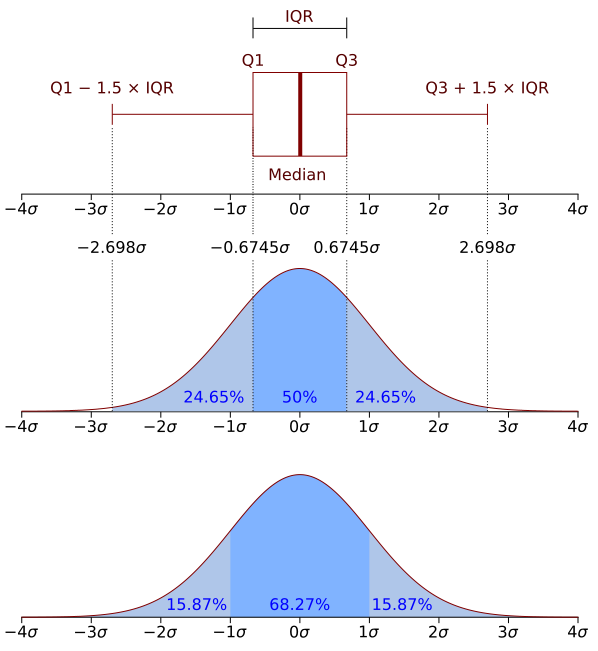
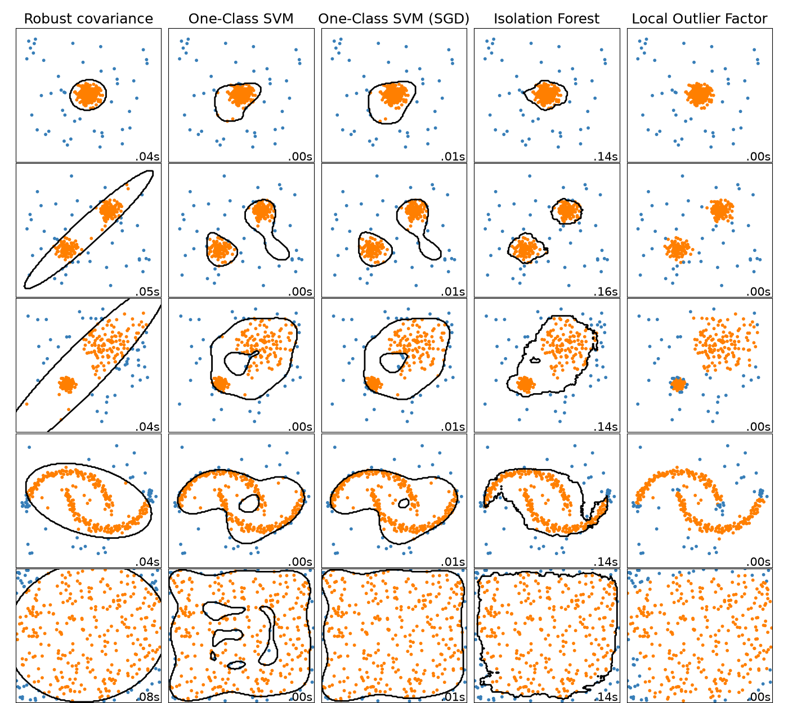
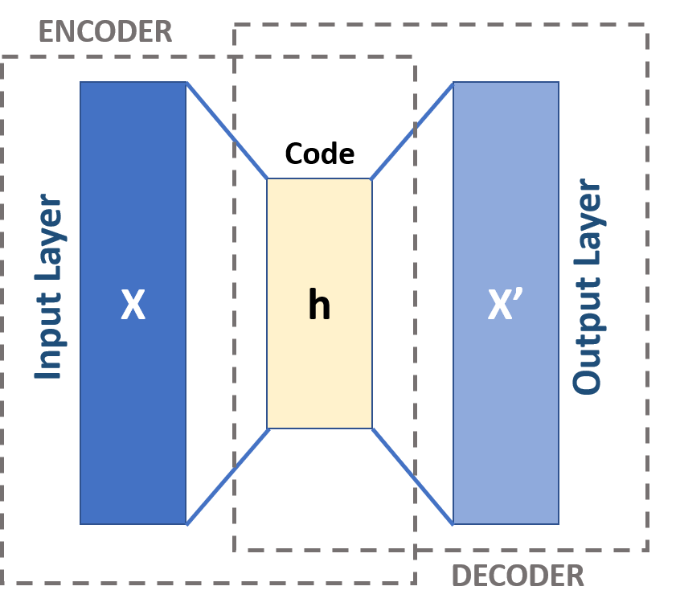

Anomaly
Detection
Eduard Stan — Dell Technologies
eduard.stan@dell.com
Who's teaching you today

Eduard Stan
Data Scientist, Dell Technologies
CERN alumnus

Oana Sîrbu
Data Scientist, Dell Technologies
Latest paper nominated for Best Student Paper at Interspeech 2026

Luiza Ciucu
Data Scientist, Dell Technologies
Former research assistant at DESY and CERN
Where today sits
[Module title]
[One-line summary]
[Module title]
[One-line summary]
[Module title]
[One-line summary]
[Module title]
[One-line summary]
[Module title]
[One-line summary]
Placeholder: the final course map will be added here.
By the end of this block you can…
- Classify an anomaly as point, contextual, or collective
- Explain why accuracy is useless on imbalanced data
- Place today's detectors in the history of the field
- Train and compare two classical detectors
- Tune a threshold to balance precision and recall
The rule for today
Every concept on a slide returns as code in the lab about 30 minutes later. Theory is here to make the lab make sense.
How today is organised
- Foundations — what counts as an anomaly
- History — how detection methods evolved
- From types to models — choosing a detector
- Evaluation — how we know a detector works
- The lab — one pipeline, any dataset
Then: takeaways, and you open the notebook.
What counts as an anomaly
What is anomaly detection?
Identifying data points, events, or observations that deviate significantly from a dataset's normal behavior.
Three types — memorize these
- point global outliers
- contextual conditional outliers
- collective groups of outliers
Anomalous on its own
A single instance that deviates from the rest — no context required to call it odd.
Example: a credit-card charge far outside normal spend.
Normal value, wrong context
The point looks fine alone — it's anomalous only given its context (time, season, location).
Example: heavy traffic — routine at rush hour, suspicious at 3 a.m.
The pattern is the anomaly
Individual points look normal; the collection of them is anomalous together.
Example: a DoS attack, or a slow drift in sensor readings.
Point, contextual, or collective?
The "Whale" transaction
A user with ~$500 average monthly spend suddenly buys $25,000.
The "Impossible Traveler"
Logs in from New York at 9:00, then from Tokyo at 11:00 the same day.
Click the type
The "Sunny Day" umbrellas
A store sells 200 umbrellas — normal for a rainy November Tuesday, but this was a hot, sunny July Tuesday.
The "Brute Force" login
One failed password is normal. But 500 failures in 60 seconds?
Assumptions traded for flexibility
Statistical & probabilistic
- Assumption: data follows a distribution (e.g. Gaussian)
- Z-score / 3-sigma rule — flag when
- Boxplots (interquartile range)
Pro: simple, interpretable.
Con: fails when data isn't that distribution, or is high-dimensional.

Classical machine learning
- Proximity: k-NN (far from neighbors) · LOF (local density vs. neighbors)
- Boundary: One-Class SVM learns a boundary around "normal"
- Ensemble: Isolation Forest — random splits isolate anomalies faster
Traded: no fixed distribution — but normal data must cluster / be dense. You'll train detectors from this era in the lab.

Deep learning & modern approaches
- Why: unstructured data (images, audio, logs) + the curse of dimensionality
- Reconstruction: autoencoders rebuild "normal" — the error is the anomaly score
- Generative: GANs — anomalies look "fake" to the discriminator
Traded: normality becomes a learnable manifold.

Which detector for which anomaly?
Each type points to a model
| Anomaly type | What catches it | Why |
|---|---|---|
| point | Isolation Forest · LOF | deviation in feature space, no time needed |
| contextual | IF / LOF + context features · forecasting / reconstruction models | value vs. what's expected for that context (time, season, user) |
| collective | autoencoders · sequence models | pattern over many steps |
You build the point-anomaly row in Module 1; the other two come later this week.
A starting point, not a rule. The right model depends on your use case and your data — the same anomaly type in two use cases can call for very different models. Benchmark on your own data.
A three-question chooser
1 · Labels?
Almost never. Treat it as unsupervised; keep any labels only to evaluate.
2 · Structure?
Tabular → Isolation Forest / LOF.
Sequential → autoencoder / sequence model.
3 · Interpretable?
Need to explain it? Start classical. Need raw power on complex data? Go deep.
But how do we know it works?
The four outcomes → why accuracy lies → what a threshold is → choosing one → judging all of them at once
Precision, recall, F1
TP true positive: caught anomaly FP false positive: false alarm FN false negative: missed anomaly TN true negative: normal, left alone
Precision
Of everything you flagged, how much was truly anomalous? — "can I trust my alarms?"
Recall
Of all true anomalies, how many did you catch? — "am I missing real problems?"
F1-score
The harmonic mean of the two — punishes ignoring either.
Accuracy lies on imbalanced data
What exactly is the threshold?
- The detector's output is an anomaly score for every record: higher means more unusual.
- The threshold is a cut-off you choose on that score: score ≥ threshold → alarm.
- It is not learned from the data: it is your decision, often set as the share of anomalies you expect (scikit-learn's
contamination), and the cut-off follows from that. - In 2D: the score is a landscape over the features, and the threshold is one contour line of it — the decision boundary.
There is no free threshold
PR-AUC: area under the precision–recall curve
- One threshold gives one point: its recall and precision.
- Sweep the threshold from strict to loose and the points trace the precision–recall curve.
- PR-AUC is the shaded area under it. 1.0 is perfect; a random detector scores about the share of anomalies (dashed line).
- It rates a detector before you pick a threshold, so use it to compare detectors.
Example data: —
One pipeline, any dataset
From raw records to honest metrics
- Explore
- Prepare
- Score
- Threshold
- Evaluate
How the lab is organised
Guided run
Walk the whole pipeline on one dataset, step by step, with the chapters of today as your map.
Transfer
Run the same pipeline on a new dataset. What changed, and what didn't?
Your turn
Cells marked ✏️ are yours to complete. Discussion cells are for your group.
The same steps carry over to the project you'll do later this week.
Takeaways
- Name the anomaly first. Point, contextual or collective: the type shapes everything after.
- Every method makes an assumption. From statistics to classical ML to deep learning, each era traded an assumption for flexibility.
- Types suggest a model; your data decides. Use the chooser as a starting point, then benchmark on your own data.
- Measure honestly. Accuracy lies on imbalanced data. Use precision, recall, F1 and PR-AUC, and remember there is no free threshold.
- One pipeline, any dataset. Explore, prepare, score, threshold, evaluate: the same steps carry over to your project.
Later this week, a colleague hands you a project to do exactly this — on a dataset you choose.
Key literature
Surveys
Anomaly Detection: A Survey
Chandola, Banerjee & Kumar, ACM Computing Surveys, 2009
The starting point: defines point, contextual and collective anomalies and the classic taxonomy of techniques.
Anomaly Detection in Univariate Time-series: A Survey on the State-of-the-Art
Braei & Wagner, 2020
How time dependence changes what an anomaly is, with classical and modern algorithms.
Textbooks
Outlier Analysis
Charu C. Aggarwal, Springer
The most complete textbook: statistics, data mining and ML, and strong on the curse of dimensionality.
Data Mining: Concepts and Techniques
Han, Kamber & Pei
The outlier-detection chapter.
Deep learning
A Unifying Review of Deep and Shallow Anomaly Detection
Ruff et al., Proceedings of the IEEE, 2021
One framework linking One-Class SVM and Isolation Forest to deep models.
Deep Learning for Anomaly Detection: A Review
Pang et al., ACM Computing Surveys, 2021
Three families: feature extraction, learned normality, end-to-end scoring.
First steps: Anomaly Detection Explained, Part I — Eduard Stan
Let's build detectors
Eduard Stan — Dell Technologies
eduard.stan@dell.com
Open the Module 1 notebook and run the pipeline yourself.